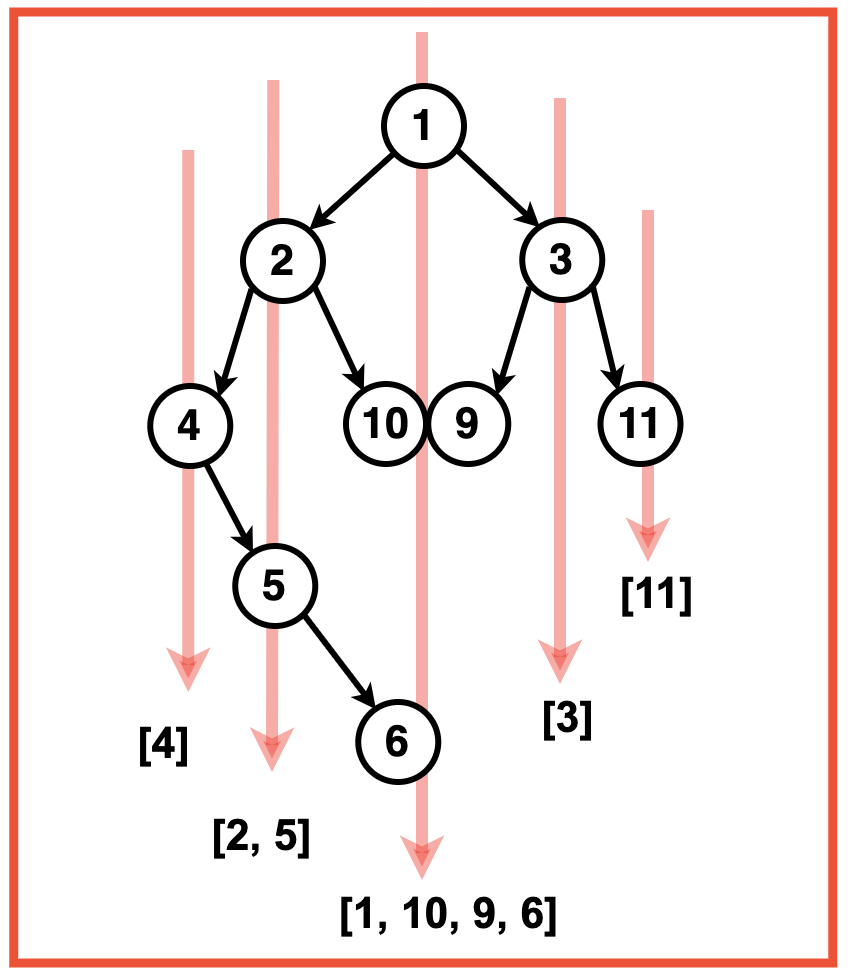
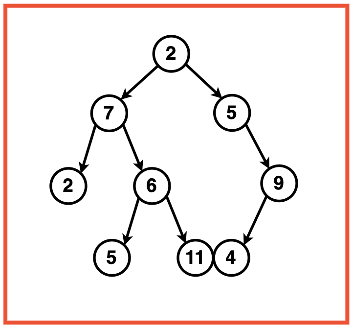
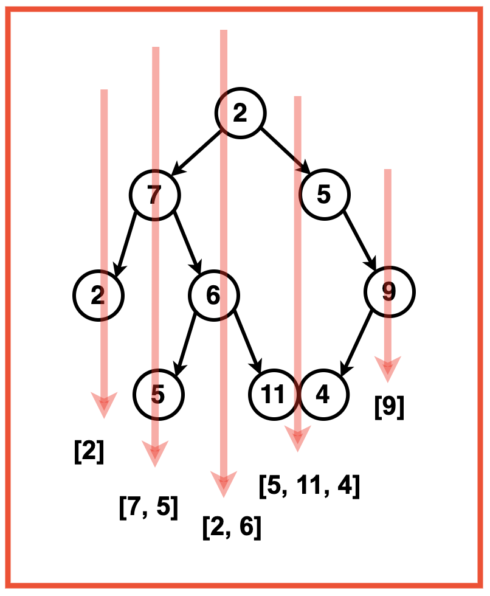
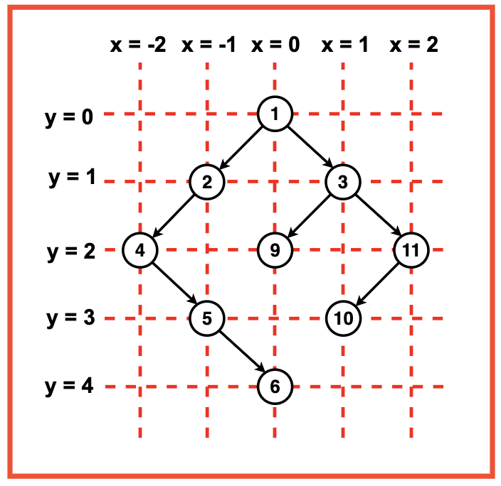
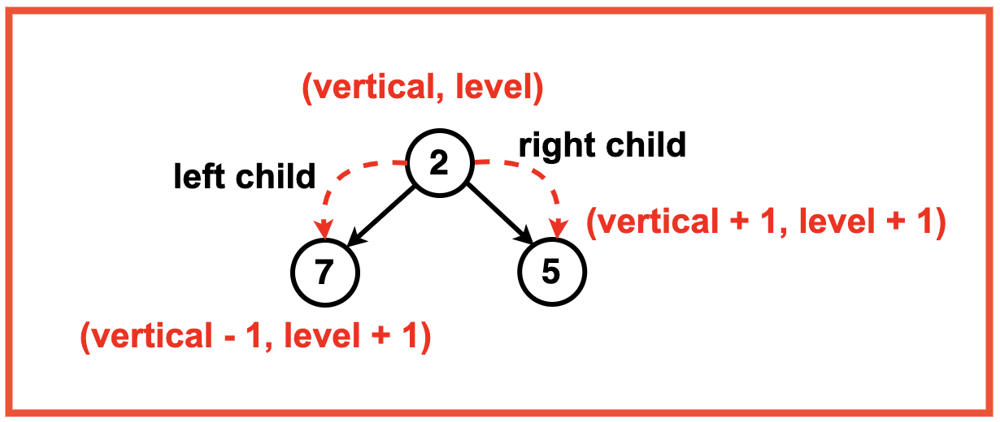
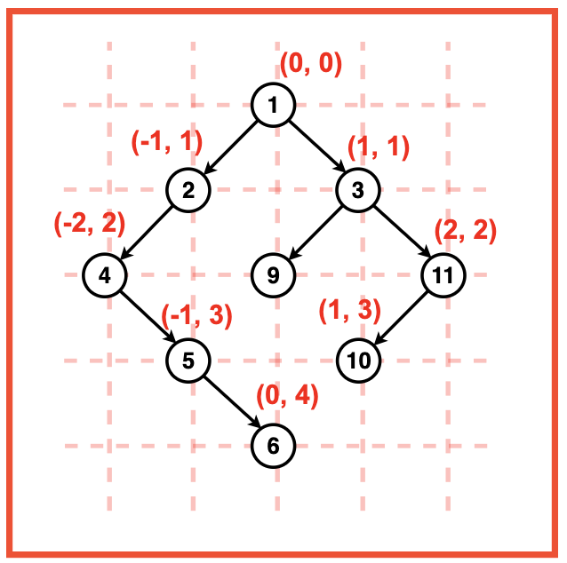
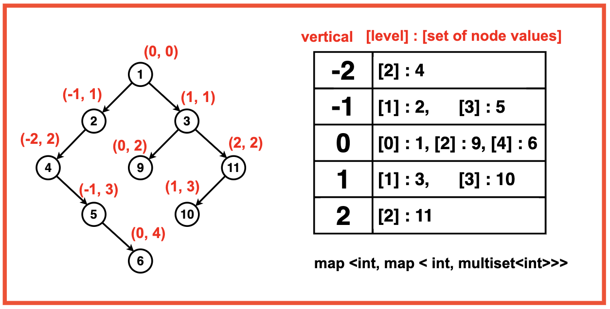
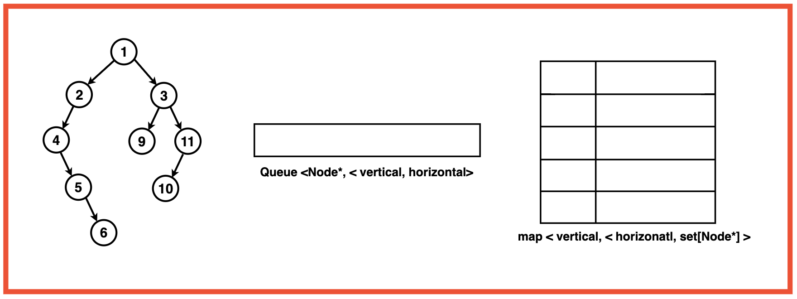
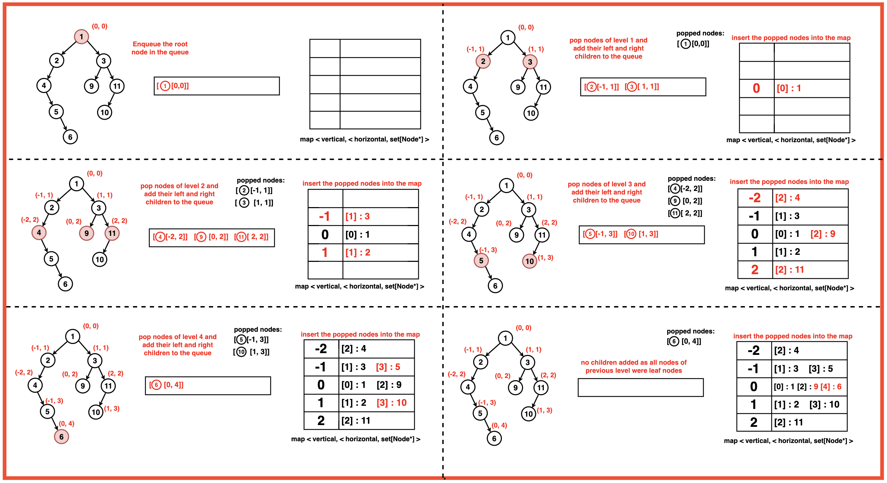

Archived from https://takeuforward.org/data-structure/vertical-order-traversal-of-binary-tree/
Problem Statement: Given a Binary Tree, return the Vertical Order Traversal of it starting from the Leftmost level to the Rightmost level. If there are multiple nodes passing through a vertical line, then they should be printed as they appear in level order traversal of the tree.
Output: Vertical Order Traversal: [[4],[2, 5], [1, 10, 9, 6],[3],[11]]
Explanation: Vertical Levels from left to right:Level -2: [4],Level -1: [2],Level 0: [1, 10, 9, 6] (Overlapping nodes are added in their level order sequence),Level 1: [3],Level 2: [11],

Input:Binary Tree: 2 7 5 2 6 -1 9 -1 -1 5 11 4 -1

Output : [[2],[7, 5],[2, 6], [5, 11, 4],[9]]
Explanation: Vertical Levels from left to right:Level -2: [2],Level -1: [7, 5],Level 0: [2, 6],Level 1: [5, 11, 4] (Overlapping nodes are added in their level order sequence),Level 2: [9].

Disclaimer: Don’t jump directly to the solution, try it out
yourself first.
Approach
Algorithm
We can assign a vertical and level to every node. This will help us in categorising nodes based on their position in the binary tree.
Vertical Coordinates (x): The vertical coordinate, denoted as 'x', represents the vertical column in the tree. It essentially signifies the horizontal position of a node in relation to its parent. Nodes with the same 'x' value are aligned vertically, forming a column.
Level Coordinates (y): The level coordinate, denoted as 'y', represents the depth or level of a node in the tree. It signifies the vertical position of a node within the hierarchy of levels. As we traverse down the tree, the 'y' value increases, indicating a deeper level.

We create a map that serves as our organisational structure. The map is based on the vertical and level information of each node. The vertical information, represented by 'x', signifies the vertical column, while the level information, denoted as 'y', acts as the key within the nested map. This nested map utilises a multiset to ensure that node values are stored in a unique and sorted order.
With our map structure in place, we initiate a level order BFS traversal using a queue. Each element in the queue is a pair containing the current node and its corresponding vertical and level coordinates. Starting with the root node, we enqueue it with initial vertical and level values (0, 0). During traversal, for each dequeued node, we update the map by inserting the node value at its corresponding coordinates and enqueue its left and right children with adjusted vertical and level information.
When traversing to the left child, the vertical value decreases by 1 and the level increases by 1, while traversal to the right child leads to an increase in both vertical and level by 1.

After completing the BFS traversal, we prepare the final result vector. We iterate through the map, creating a column vector for each vertical column. This involves gathering node values from the multiset and inserting them into the column vector. These column vectors are then added to the final result vector, resulting in a 2D representation of the vertical order traversal of the binary tree.

Create an empty map to store the nodes based on their vertical and horizontal levels.The key of the map ‘x’ represents the vertical column, and the nested map uses ‘y’ as the key for the level. Initialise a ‘multiset’ to store node values at a specific vertical and level to ensure unique and sorted order of nodes.

Initialise a queue for level order BFS traversal. Each element in the queue should be a pair containing the current node and its vertical and level order information as x and coordinates. Enqueue the root node into the queue with its initial vertical and level order values as (0, 0)

While the queue is not empty, pop the front node of the queue:
Get this nodes vertical ie. ‘x’ and level order ‘y’ information.
Insert this node into the map at its corresponding coordinate.
Push the left and right child of the node with their updated horizontal distance and level order.

For the left child, decrement the vertical value ‘x’ by 1 to indicate a move towards the left. Increment the level value ‘y’ by 1 to indicate a move down to the next level.
For the right child, increment the vertical value ‘x’ by 1 to indicate a move towards the right.
Increment the level value ‘y’ by 1 to indicate a move down to the next level.
Enqueue both the left and right children along with their updated vertical and level information into the queue.
After the BFS traversal using the queue is complete, initialise a final result 2D vector ‘ans’.
Iterate through the map, creating a column vector for each vertical column. Gather the node values from the multiset and insert them into the column vector.
Add these column vectors to the final result vector ‘ans’.
Return the 2D vector `ans` representing the vertical order traversal of the binary tree.
Code
#include <bits/stdc++.h>
using namespace std;
// This structure defines a node in the binary tree
struct Node {
// This stores the value of the node
int data;
// Pointer to the left child
Node* left;
// Pointer to the right child
Node* right;
// Constructor initializes node with value
Node(int val) : data(val), left(nullptr), right(nullptr) {}
};
// This class contains the solution logic
class Solution {
public:
// Function to perform vertical order traversal
vector<vector<int>> findVertical(Node* root) {
// A map is used to store nodes grouped by vertical and level
map<int, map<int, multiset<int>>> nodes;
// A queue is used for BFS, storing node and its coordinates
queue<pair<Node*, pair<int, int>>> todo;
// Push the root node with vertical = 0 and level = 0
todo.push({root, {0, 0}});
// Perform BFS traversal
while (!todo.empty()) {
// Get the front element in queue
auto p = todo.front();
todo.pop();
// Extract node
Node* temp = p.first;
// Extract vertical (x)
int x = p.second.first;
// Extract level (y)
int y = p.second.second;
// Insert the node into map by vertical and level
nodes[x][y].insert(temp->data);
// If left child exists, push with updated coordinates
if (temp->left) {
todo.push({temp->left, {x - 1, y + 1}});
}
// If right child exists, push with updated coordinates
if (temp->right) {
todo.push({temp->right, {x + 1, y + 1}});
}
}
// Final answer vector
vector<vector<int>> ans;
// Iterate through verticals in map
for (auto p : nodes) {
vector<int> col;
// Collect all nodes in order of levels
for (auto q : p.second) {
col.insert(col.end(), q.second.begin(), q.second.end());
}
// Push the column into result
ans.push_back(col);
}
// Return final vertical order traversal
return ans;
}
};
// Helper function to print result
void printResult(const vector<vector<int>>& result) {
for (auto level : result) {
for (auto node : level) {
cout << node << " ";
}
cout << endl;
}
cout << endl;
}
// Driver code
int main() {
// Create sample binary tree
Node* root = new Node(1);
root->left = new Node(2);
root->left->left = new Node(4);
root->left->right = new Node(10);
root->left->left->right = new Node(5);
root->left->left->right->right = new Node(6);
root->right = new Node(3);
root->right->right = new Node(10);
root->right->left = new Node(9);
// Create solution object
Solution solution;
// Call vertical order traversal
vector<vector<int>> verticalTraversal = solution.findVertical(root);
// Print result
cout << "Vertical Traversal:" << endl;
printResult(verticalTraversal);
return 0;
}
import java.util.*;
// This class defines a node in the binary tree
class Node {
int data;
Node left;
Node right;
// Constructor initializes node with value
Node(int val) {
data = val;
left = null;
right = null;
}
}
// This class contains the solution logic
class Solution {
// Function to perform vertical order traversal
public List<List<Integer>> findVertical(Node root) {
// Map to store vertical and level mapping
TreeMap<Integer, TreeMap<Integer, PriorityQueue<Integer>>> nodes = new TreeMap<>();
// Queue for BFS storing node with vertical and level
Queue<Pair> todo = new LinkedList<>();
// Push root node with coordinates (0,0)
todo.offer(new Pair(root, 0, 0));
// Perform BFS
while (!todo.isEmpty()) {
Pair p = todo.poll();
Node temp = p.node;
int x = p.vertical;
int y = p.level;
// Add node value to map
nodes.putIfAbsent(x, new TreeMap<>());
nodes.get(x).putIfAbsent(y, new PriorityQueue<>());
nodes.get(x).get(y).offer(temp.data);
// If left child exists, push to queue
if (temp.left != null) {
todo.offer(new Pair(temp.left, x - 1, y + 1));
}
// If right child exists, push to queue
if (temp.right != null) {
todo.offer(new Pair(temp.right, x + 1, y + 1));
}
}
// Final answer
List<List<Integer>> ans = new ArrayList<>();
// Iterate through map to build result
for (TreeMap<Integer, PriorityQueue<Integer>> ys : nodes.values()) {
List<Integer> col = new ArrayList<>();
for (PriorityQueue<Integer> pq : ys.values()) {
while (!pq.isEmpty()) {
col.add(pq.poll());
}
}
ans.add(col);
}
return ans;
}
// Helper class for queue elements
static class Pair {
Node node;
int vertical;
int level;
Pair(Node n, int v, int l) {
node = n;
vertical = v;
level = l;
}
}
}
// Driver class
public class Main {
// Function to print result
public static void printResult(List<List<Integer>> result) {
for (List<Integer> level : result) {
for (int val : level) {
System.out.print(val + " ");
}
System.out.println();
}
}
// Main function
public static void main(String[] args) {
// Create sample binary tree
Node root = new Node(1);
root.left = new Node(2);
root.left.left = new Node(4);
root.left.right = new Node(10);
root.left.left.right = new Node(5);
root.left.left.right.right = new Node(6);
root.right = new Node(3);
root.right.right = new Node(10);
root.right.left = new Node(9);
// Create solution object
Solution solution = new Solution();
// Call function
List<List<Integer>> verticalTraversal = solution.findVertical(root);
// Print result
System.out.println("Vertical Traversal:");
printResult(verticalTraversal);
}
}
# This class defines a node in the binary tree
class Node:
def __init__(self, val):
self.data = val
self.left = None
self.right = None
# This class contains the solution logic
class Solution:
# Function to perform vertical order traversal
def findVertical(self, root):
# Dictionary to store nodes by vertical and level
nodes = {}
# Queue for BFS traversal
from collections import deque, defaultdict
todo = deque()
todo.append((root, 0, 0))
# BFS loop
while todo:
temp, x, y = todo.popleft()
# Insert into dictionary
if x not in nodes:
nodes[x] = {}
if y not in nodes[x]:
nodes[x][y] = []
nodes[x][y].append(temp.data)
# Left child
if temp.left:
todo.append((temp.left, x - 1, y + 1))
# Right child
if temp.right:
todo.append((temp.right, x + 1, y + 1))
# Prepare final result
ans = []
for x in sorted(nodes.keys()):
col = []
for y in sorted(nodes[x].keys()):
col.extend(sorted(nodes[x][y]))
ans.append(col)
return ans
# Function to print result
def printResult(result):
for level in result:
print(" ".join(map(str, level)))
print()
# Driver code
if __name__ == "__main__":
# Create sample binary tree
root = Node(1)
root.left = Node(2)
root.left.left = Node(4)
root.left.right = Node(10)
root.left.left.right = Node(5)
root.left.left.right.right = Node(6)
root.right = Node(3)
root.right.right = Node(10)
root.right.left = Node(9)
# Create solution object
solution = Solution()
# Call function
verticalTraversal = solution.findVertical(root)
# Print result
print("Vertical Traversal:")
printResult(verticalTraversal)
// This class defines a node in the binary tree
class Node {
constructor(val) {
this.data = val;
this.left = null;
this.right = null;
}
}
// This class contains the solution logic
class Solution {
// Function to perform vertical order traversal
findVertical(root) {
// Map stores vertical and level mapping
let nodes = new Map();
// Queue for BFS
let todo = [];
todo.push([root, 0, 0]);
// BFS loop
while (todo.length > 0) {
let [temp, x, y] = todo.shift();
// Insert into map
if (!nodes.has(x)) nodes.set(x, new Map());
if (!nodes.get(x).has(y)) nodes.get(x).set(y, []);
nodes.get(x).get(y).push(temp.data);
// Left child
if (temp.left) todo.push([temp.left, x - 1, y + 1]);
// Right child
if (temp.right) todo.push([temp.right, x + 1, y + 1]);
}
// Prepare final result
let ans = [];
let sortedX = [...nodes.keys()].sort((a, b) => a - b);
for (let x of sortedX) {
let col = [];
let sortedY = [...nodes.get(x).keys()].sort((a, b) => a - b);
for (let y of sortedY) {
col.push(...nodes.get(x).get(y).sort((a, b) => a - b));
}
ans.push(col);
}
return ans;
}
}
// Helper function to print result
function printResult(result) {
for (let level of result) {
console.log(level.join(" "));
}
console.log();
}
// Driver function
function main() {
// Create sample binary tree
let root = new Node(1);
root.left = new Node(2);
root.left.left = new Node(4);
root.left.right = new Node(10);
root.left.left.right = new Node(5);
root.left.left.right.right = new Node(6);
root.right = new Node(3);
root.right.right = new Node(10);
root.right.left = new Node(9);
// Create solution object
let solution = new Solution();
// Call function
let verticalTraversal = solution.findVertical(root);
// Print result
console.log("Vertical Traversal:");
printResult(verticalTraversal);
}
// Run driver
main();
Complexity Analysis
Time Complexity: O(N * log²N * log²N * log²N), where N represents the number of nodes in the Binary Tree.
Postorder traversal is performed using BFS with a time complexity of O(N), since each node is visited exactly once.
Multiset operations for inserting overlapping nodes at specific vertical and horizontal levels take O(log²N) time.
Map operations involve insertion and retrieval of nodes using vertical and level as keys. Since there are two nested maps, the total complexity becomes O(log²N * log²N).
Space Complexity: O(N + N/2), where N represents the number of nodes in the Binary Tree.
The map storing nodes based on vertical and level information occupies O(N) space, as it stores all N nodes of the tree.
The queue for BFS traversal occupies space proportional to the maximum number of nodes at any level, which can be O(N/2) in the worst case for a balanced tree.